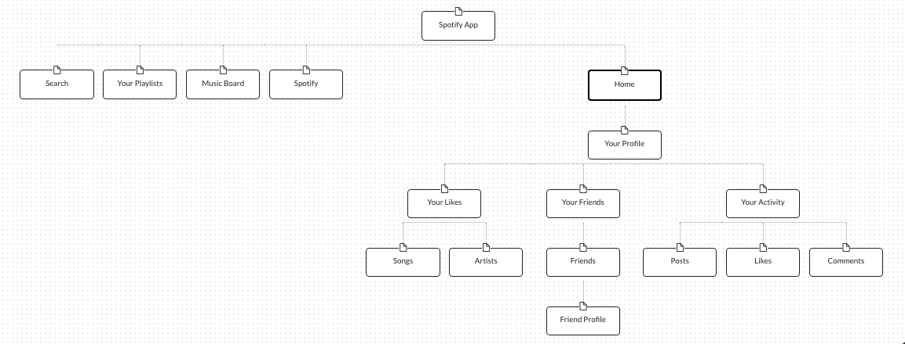
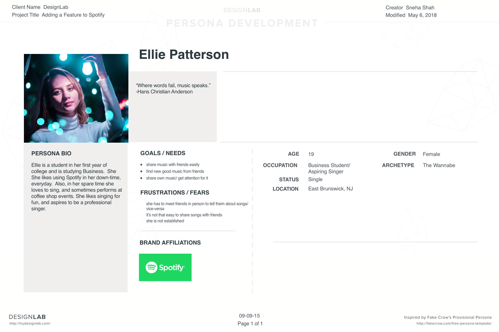
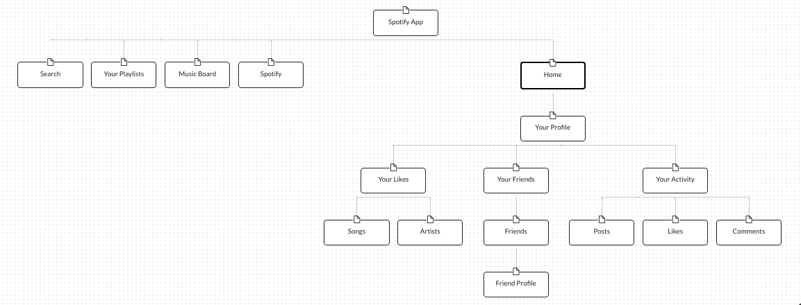

Sitemap
The sitemap maps all the pages that I will include in my prototype.
Task Flow
The task flow shows actions the user will take to achieve a typical goal.

This project gave me the opportunity to build a new feature to an existing application. It required 80 hours of research, information architecture, wireframing, prototyping and testing. I interviewed users, mostly young people, to find out their listening habits and experiences using music apps. I explored what how they viewed social functions on these apps and how they felt about potentially having more opportunities to share music with friends.
Primary Research: Interviews to find out users experiences using music streaming apps, and how they feel about the social component of using these apps.
Quantitative Research: Find out which devices are most popularly used by users.
Market Research: Do a competitive analysis of Spotify's competitors to gauge their strengths and weaknesses. See what social features competitors or Spotify are using, or have already been trying to implement before.
The empathy map helps me group and organize my research findings so that I can better understand users' frustrations and goals.
The user persona is a realistic but fictional persona based on my research findings.
The sitemap maps all the pages that I will include in my prototype.
The task flow shows actions the user will take to achieve a typical goal.
This exercise involves taking insights from user research and translating them into point-of-view statements, which then become hmw questions that address how to solve user's problems
These questions take user insights and help me towards defining product requirements.
1. How might we enable users to select from a large variety of songs?These wireframes lay the foundation for my prototype.
Here are my final prototypes.
Here are my test objectives.
Test whether the site flow is easy and effective.
Test if users can share a song to the music board, and view notifications.
Test if users can access the different screens.
Test if users can add a friend from their gmail.
Test if users can navigate to their profile.
Here are my test objectives.
Test whether the site flow is easy and effective.
Test if users can share a song to the music board, and view notifications.
Test if users can access the different screens.
Test if users can add a friend from their gmail.
Test if users can navigate to their profile.
The affinity map takes my user testing findings and helps me understand how I can improve my prototype, measuring the significance of user's feelings towards the prototype in percentages.
Here is my final prototype